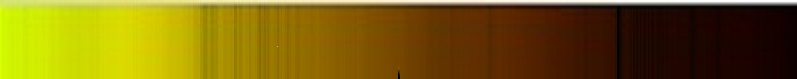
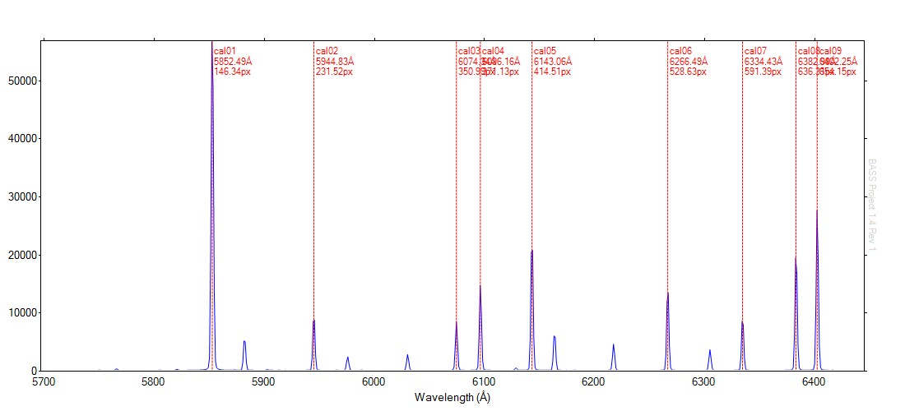
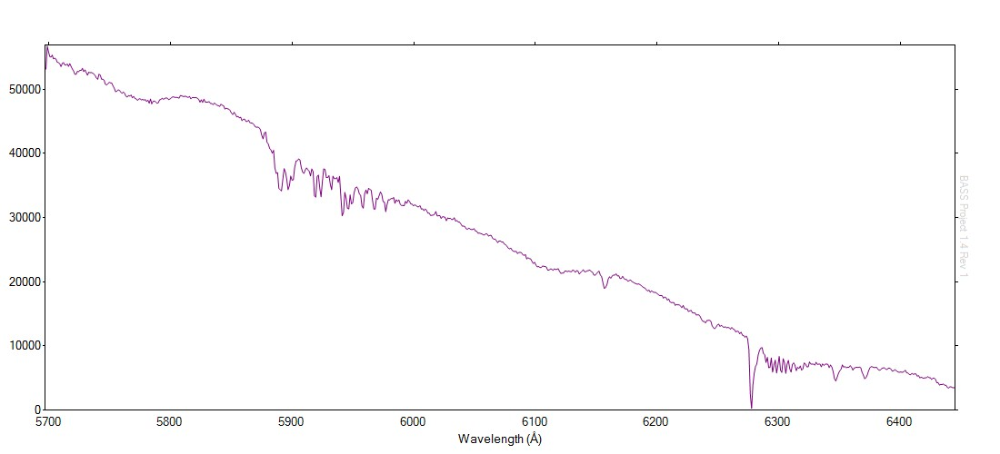
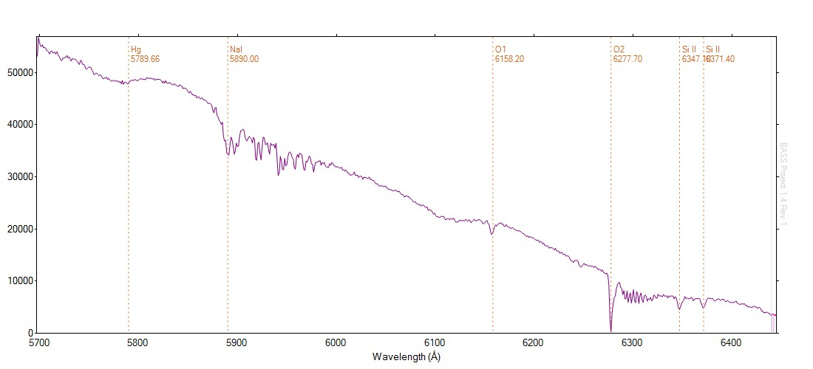
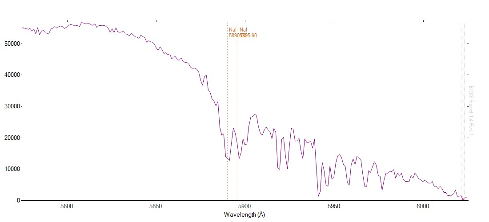
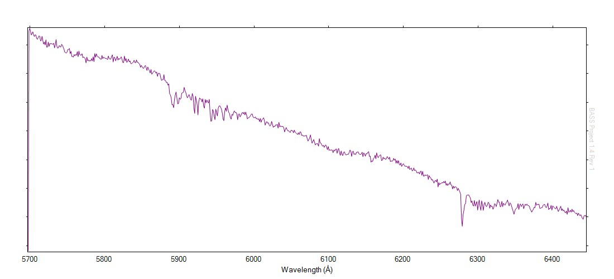
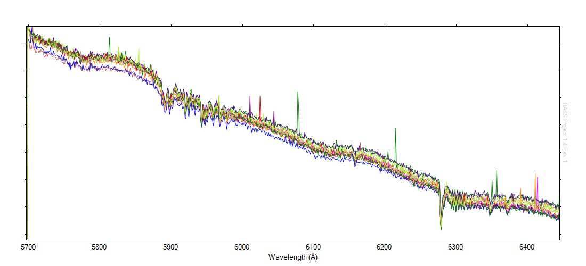
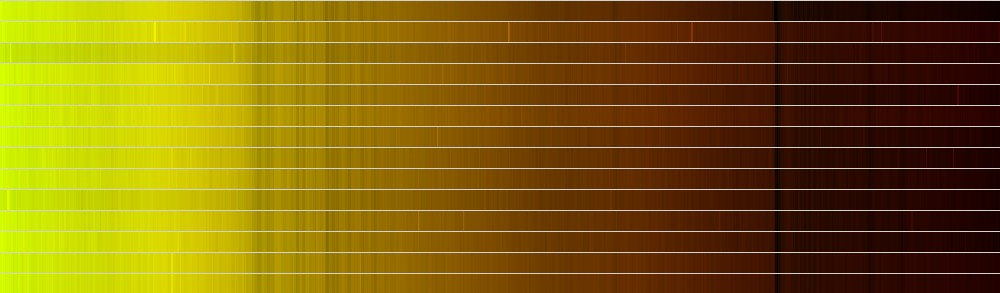
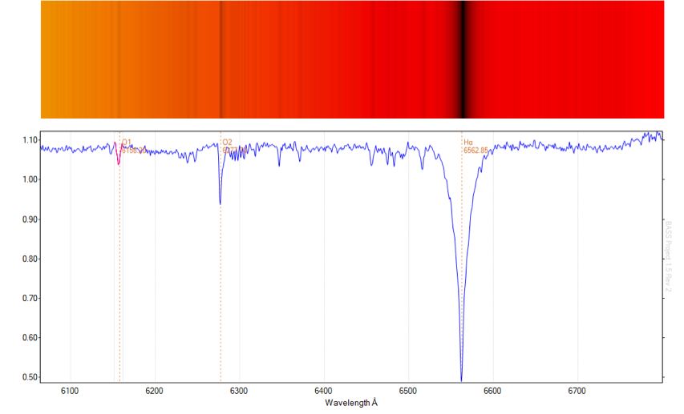
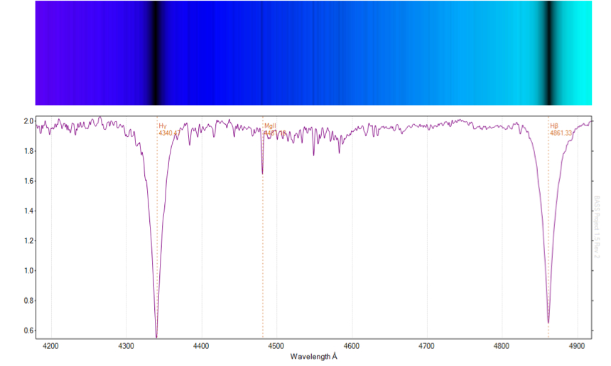

'First light' star testing of a Spectra L200 spectroscope . Click “Continue reading” below to see the entire analysis.


A sequence of 12 x 300s sub exposures of star HIP 42913 (SAO 236232), a bright type A1V star in the constellation of Vela was acquired with the Spectra L200, using a slit width of approximately 35 microns (as indicated on the spectroscope dial). Spectral range was centered around 6100 Å - a comparatively 'uninteresting' region of A-type stars (see gamma Centauri at the end of this post).
Equipment
Telescope: DSI RC14C (0.35m, f/7 Ritchey–Chrétien) Imaging Camera: Atik314L+ (1392×1040, 0.65µm) Spectroscope: Spectra L200 with 600 l/mm diffraction grating
Additional notes:
- The altitude of the star was comparatively low (+38 degrees and setting in the south west circumpolar sky).
- Images were bias and dark adjusted (a fresh master dark frame from 12 x 300s darks).
- CCD temperature was -10 degrees C.
- The profile has not been corrected for instrument response.
Analysis
The target sub frames were combined in MaxIM DL using a sum function and no alignment. Images were guided throughout the sequence.
Neon calibration images were taken before and after the sequence. The final neon image was used for calibration (for no particular reason).
Images were loaded into BASS for analysis.
A simultaneous correction for slant was applied to both the neon and target spectra. (No tilt is evident in the raw images.)
Active binning regions were selected individually for both the neon and target images. Subtraction regions above and below the spectrum were applied to the target image.
A calibration of the neon image using 9 points and a 5th order polynomial yielded an RMS of 0.007: 

Measurement of a number of additional neon lines yielded very good correlation between measured and published values. For example, using the BASS measurement tool at neon 6143.06 Å:
Selected Start : 6139.3Å (411.05 px)
Selected End : 6146.8Å (417.91 px)
Selected Width : 7.5Å (6.86 px)
Max Flux : 23434.47 at 6143.05Å (414.5 px)
Min Flux : 223.88 at 6139.43Å (411.15 px)
Flux Range : 23210.59
Average Flux : 6780.81 (RMS 10715.97)
FWHM : 2.32 Å (R = 2643 @6143.05Å)
The calibrated star profile appears as follows (click to enlarge): 

The profile with a number of spectral features identified using the BASS measurement tool: 

A cropped version centred on the sodium doublet region: 

Additional charts:
- A single 300s exposure (note the poor SNR evident in a single 300s image):


2. A chart displaying all 12 profiles. Some drift is evident:  


Update September 1st, 2014
Gamma Centauri - reference spectra taken at more "useful" target wavelengths as part of the 2014 eta Carinae periastron campaign, showing the strong Hydrogen absorption lines typical of A-type stars. These profiles were created using ISIS.

